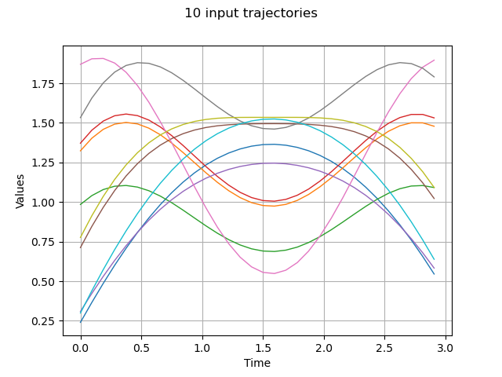
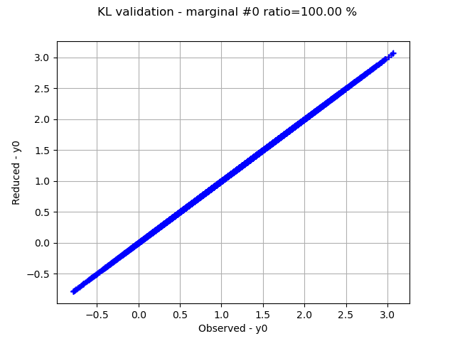
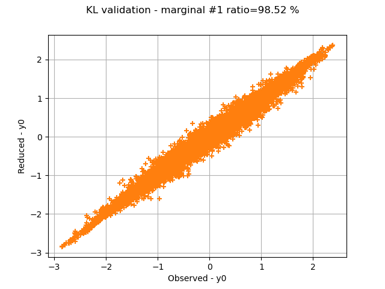
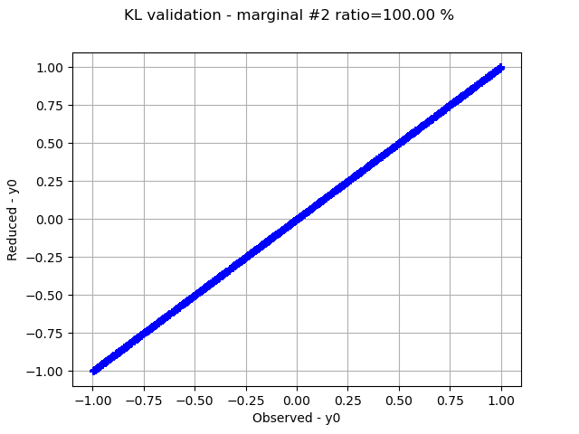
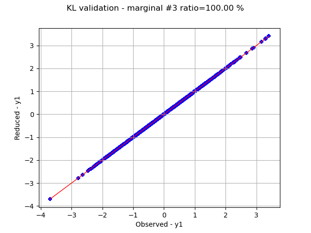
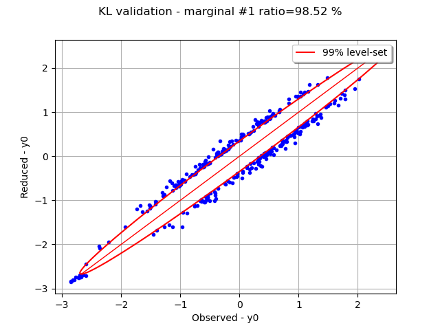
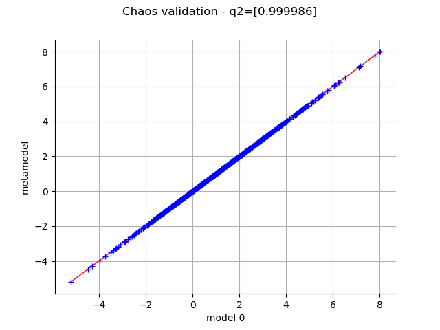
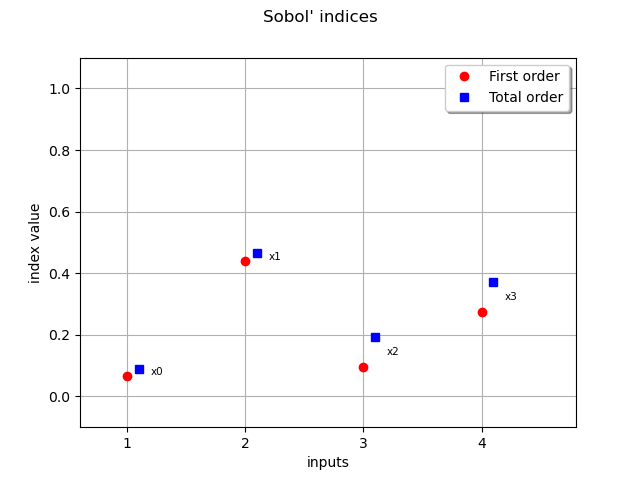

Note
Click here to download the full example code
Estimate Sobol indices on a field to point function¶
In this example, we are going to perform sensitivity analysis of an application that takes fields as input and vectors as output from a sample of data:
This involves these steps:
Generate some input/output data matching the application

Run the
FieldToPointFunctionalChaosAlgorithmclassValidate the Karhunen-Loeve decompositions of the inputs
Validate the chaos metamodel between the KL coefficients and the outputs
Retrieve the Sobol’ indices from
FieldFunctionalChaosSobolIndices
import openturns as ot
from openturns.viewer import View
First build a process to generate the input data. We assemble a 4-d process from functional and Gaussian processes.
T = 3.0
NT = 32
tg = ot.RegularGrid(0.0, T / NT, NT)
f1 = ot.SymbolicFunction(['t'], ['sin(t)'])
f2 = ot.SymbolicFunction(['t'], ['cos(t)^2'])
coeff1_dist = ot.Normal([1.0] * 2, [0.6] * 2, ot.CorrelationMatrix(2))
p1 = ot.FunctionalBasisProcess(coeff1_dist, ot.Basis([f1, f2]), tg)
p2 = ot.GaussianProcess(ot.SquaredExponential([1.0], [T / 4.0]), tg)
coeff3_dist = ot.ComposedDistribution([ot.Uniform(), ot.Normal()])
f1 = ot.SymbolicFunction(["t"], ["1", "0"])
f2 = ot.SymbolicFunction(["t"], ["0", "1"])
p3 = ot.FunctionalBasisProcess(coeff3_dist, ot.Basis([f1, f2]))
X = ot.AggregatedProcess([p1, p2, p3])
X.setMesh(tg)
Draw some input trajectories from our process
ot.RandomGenerator.SetSeed(0)
x = X.getSample(10)
graph = x.drawMarginal(0)
graph.setTitle(f'{x.getSize()} input trajectories')
_ = View(graph)

Generate input realizations and the corresponding output from a Field->Point function
class pyf2p(ot.OpenTURNSPythonFieldToPointFunction):
def __init__(self, mesh):
super(pyf2p, self).__init__(mesh, 4, 1)
self.setInputDescription(["x1", "x2", "x3", "x4"])
self.setOutputDescription(['y'])
def _exec(self, X):
Xs = ot.Sample(X)
x1, x2, x3, x4 = Xs.computeMean()
y = x1 + x2 + x3 - x4 + x1 * x2 - x3 * x4 - 0.1 * x1 * x2 * x3
return [y]
f = ot.FieldToPointFunction(pyf2p(tg))
N = 1000
x = X.getSample(N)
y = f(x)
Run the field-vector algorithm that performs KL-decomposition of the inputs and chaos learning between the KL coefficients and the ouput vectors
algo = ot.FieldToPointFunctionalChaosAlgorithm(x, y)
# 1. KL parameters
algo.setCenteredSample(False) # our input sample is not centered (default)
algo.setThreshold(4e-2) # we expect to explain 96% of variance
algo.setRecompress(False) # whether to re-truncate modes according to a global eigen value threshold across inputs (default)
algo.setNbModes(10) # max KL modes (default=unlimited)
# 2. chaos parameters:
bs = ot.ResourceMap.GetAsUnsignedInteger('FunctionalChaosAlgorithm-BasisSize')
ot.ResourceMap.SetAsUnsignedInteger('FunctionalChaosAlgorithm-BasisSize', N) # chaos basis size
ot.ResourceMap.SetAsBool('FunctionalChaosAlgorithm-Sparse', True)
algo.run()
ot.ResourceMap.SetAsUnsignedInteger('FunctionalChaosAlgorithm-BasisSize', bs)
result = algo.getResult()
Retrieve the eigen values of each KL decomposition: we observe that each input process is represented by a different number of modes.
kl_results = result.getInputKLResultCollection()
n_modes = [len(res.getEigenvalues()) for res in kl_results]
print(f"n_modes={n_modes}")
n_modes=[2, 3, 1, 1]
Retrieve the ratios of selected variance over cumulated variance: we see that all 3 inputs are perfectly represented, and the 2nd input almost perfectly.
ratios = [res.getSelectionRatio() for res in kl_results]
print(f"ratios={ratios}")
ratios=[1.0, 0.9851877006609379, 1.0, 1.0]
Graphically validate the KL decompositions: we also see that the 2nd input appear to be less well represented than the others. Note however that the 0.98 selected/cumulated variance ratio actually means it is very good.
graphs = []
for i in range(x.getDimension()):
validation = ot.KarhunenLoeveValidation(x.getMarginal(i), kl_results[i])
graph = validation.drawValidation().getGraph(0, 0)
graph.setTitle(f'KL validation - marginal #{i} ratio={100.0 * ratios[i]:.2f} %')
View(graph)
graphs.append(graph)




On the 2nd marginal we can filter out the points inside the 99% level-set to see that actually only a few points out of N are actually outliers.
graph = graphs[1]
data = graph.getDrawable(1).getData()
normal = ot.NormalFactory().build(data)
log_pdf = normal.computeLogPDF(data).asPoint()
l_pair = [(log_pdf[i], data[i]) for i in range(len(data))]
l_pair.sort(key=lambda t: t[0])
index_bad = int(0.01 * len(data)) # here 0.01 = (100-99)%
beta = l_pair[index_bad][0]
gnorm = normal.drawLogPDF(data.getMin(), data.getMax())
bad = [l_pair[i][1] for i in range(index_bad + 1)]
c = ot.Cloud(bad)
c.setPointStyle("bullet")
c.setColor("blue")
graph.setDrawable(c, 1)
dr = gnorm.getDrawable(0)
dr.setLevels([beta])
dr.setColor("red")
dr.setLegend("99% level-set")
graph.add(dr)
_ = View(graph)

Inspect the chaos quality: residuals and relative errors. The relative error is very low; that means the chaos decomposition performs very well.
print(f"residuals={result.getFCEResult().getResiduals()}")
print(f"relative errors={result.getFCEResult().getRelativeErrors()}")
residuals=[0.00021166]
relative errors=[1.32988e-08]
Graphically validate the chaos result: we can see the points are very close to the diagonal; this means approximated points are very close to the learning points.
modes = result.getModesSample()
metamodel = result.getFCEResult().getMetaModel()
output = result.getOutputSample()
validation = ot.MetaModelValidation(modes, output, metamodel)
q2 = validation.computePredictivityFactor()
print(f"q2={q2}")
graph = validation.drawValidation()
graph.setTitle(f'Chaos validation - q2={q2}')
_ = View(graph)

q2=[0.999988]
Perform an evaluation on a new realization and ensure the output is close to the evaluation with the reference function
metamodel = result.getFieldToPointMetamodel()
x0 = X.getRealization()
y0 = f(x0)
y0hat = metamodel(x0)
print(f'y0={y0} y0^={y0hat}')
y0=[6.01011] y0^=[6.00928]
Retrieve the first order Sobol’ indices The preponderant variables are x2, x4 whereas x1, x3 have a low influence on the output
sensitivity = ot.FieldFunctionalChaosSobolIndices(result)
sobol_0 = sensitivity.getFirstOrderIndices()
print(f"first order={sobol_0}")
first order=[0.0666229,0.441147,0.0953875,0.275405]
Retrieve the total Sorder obol’ indices The x3,x4 variables have total order indices significantly different than their first order indices counterpart meaning they interact with other variables
sobol_0t = sensitivity.getTotalOrderIndices()
print(f"total order={sobol_0t}")
total order=[0.0902836,0.465221,0.19324,0.372768]
Draw the Sobol’ indices
graph = sensitivity.draw()
view = View(graph)
View.ShowAll()

Total running time of the script: ( 0 minutes 7.793 seconds)